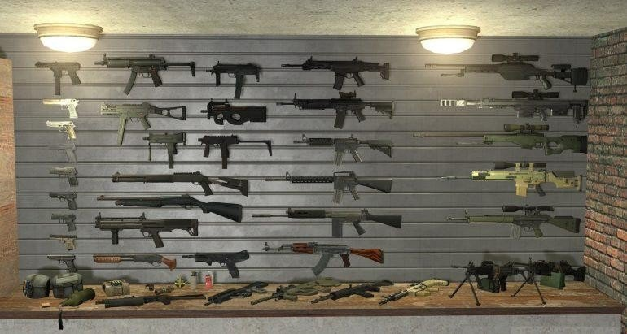
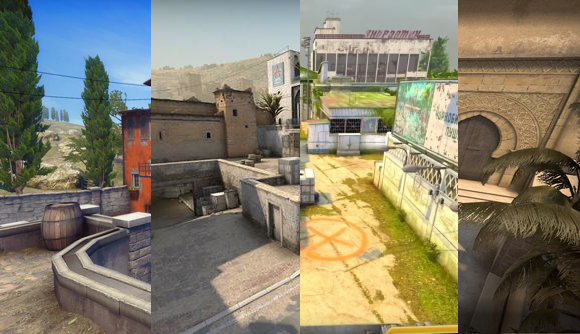

CS:GO – это моя любимая игра. Я играю в нее уже несколько лет и всегда нахожу что-то новое и интересное. Советую всем, кто любит шутеры от первого лица.
Counter-Strike: Global Offensive
Counter-Strike: Global Offensive (CS:GO) – многопользовательская игра в жанре шутера от первого лица, разработанная компанией Valve Corporation. Она является четвертой игрой в серии Counter-Strike и была выпущена в августе 2012 года для Windows, macOS, Xbox 360 и PlayStation 3. В CS:GO две команды, террористы и контртеррористы, сражаются друг с другом, выполняя различные задания и цели.
Геймплей
Геймплей в CS:GO уникален и выделяется на фоне других шутеров от первого лица. В игре есть различные режимы, включая соревновательный режим, в котором команды сражаются друг с другом на различных картах, а также режимы игры с ботами и народными картами.

Оружие
CS:GO имеет большой арсенал оружия, включая пистолеты, автоматы, снайперские винтовки, гранаты и многое другое. Каждый тип оружия имеет свои особенности и характеристики, которые нужно учитывать при выборе. Кроме того, игроки могут изменять оружие и улучшать его с помощью скинов.
Карты
В CS:GO есть множество карт, каждая из которых уникальна и требует от команд различных стратегий и тактик. Карты могут быть сделаны в разных стилях, включая городские локации, сельские уголки, пустынные пейзажи и многое другое.
Трейлер игры
Отзывы
-
Это лучшая игра, которую я когда-либо играл. У нее есть все, что нужно для шутера от первого лица – интересный геймплей, разнообразное оружие и отличная графика. Рекомендую всем попробовать.
-
-
Я играл в CS:GO только недавно, но могу сказать, что это очень веселая игра. Мне нравится ее геймплей и атмосфера. Есть много разных режимов, в которых можно играть, и каждый из них имеет свои особенности. Буду играть в нее еще много-много раз.